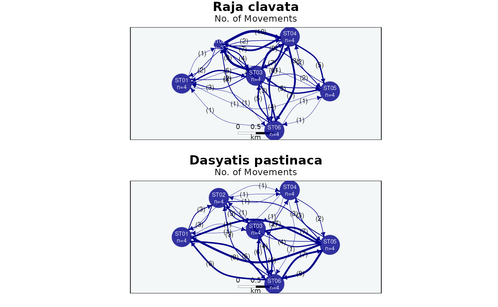

Plots a spatial movement network from a mobyNetwork object of type
"movement" (as returned by calculateTransitions). Nodes are drawn at the geographic
location of each spatial unit (receiver, station, habitat, region) and directed edges (arrows)
represent transitions between them. Node size reflects the number of individuals detected at each
location, while edge width and labels reflect either the number of movements or the number of
transiting individuals.
An optional coastline (land.shape) and a background raster (background.layer, e.g. bathymetry
or temperature) can be supplied to render the network over a projected map, complete with a scale
bar. When node coordinates are unavailable, a force-directed layout is used instead.
This function is also invoked automatically by plot() on a movement-type
mobyNetwork (see plot.mobyNetwork).
Usage
plotMovements(
network,
land.shape = NULL,
coastline = getOption("moby.coastline", TRUE),
epsg.code = NULL,
edge.metric = c("movements", "individuals"),
land.color = "gray50",
background.layer = NULL,
background.color = "#F3F7F7",
background.pal = NULL,
color.nodes.by = c("detection", "group"),
nodes.color = NULL,
nodes.alpha = 0.8,
nodes.size = c(0.04, 0.08),
nodes.label = TRUE,
nodes.label.wrap = FALSE,
nodes.label.color = "white",
repel.nodes = TRUE,
repel.buffer = 1.1,
edge.color = "darkblue",
edge.curved = 0.5,
edge.width = c(0.4, 3.5),
edge.arrow.size = 0.5,
edge.arrow.width = 1.5,
edge.label = TRUE,
edge.label.color = "black",
edge.label.font = 1,
scale.km = NULL,
scale.pos = "bottom",
scale.inset = c(0, 0.05),
scale.height = 1.5,
scale.color = "black",
extent.factor = 1.1,
main = NULL,
ncol = 1,
cex = 1,
file = NULL,
width = NULL,
height = NULL,
res = 300,
...
)Arguments
- network
A
mobyNetworkobject of type"movement", as returned bycalculateTransitions. When the network carries ID groups, a separate panel is drawn for each group.- land.shape
Optional. An
sfobject containing coastlines, drawn underneath the network.- coastline
When the map is projected (an
epsg.code,land.shapeorbackground.layeris given) and noland.shapeis supplied, draw a default coastline for the extent.TRUEauto-picks a scale; a string forces anrnaturalearthscale;FALSEdraws none. Defaults togetOption("moby.coastline", TRUE). Requires the (Suggested)rnaturalearth(withrnaturalearthdata) ormapspackage.- epsg.code
Optional. A projected coordinate reference system (numeric EPSG code or
crsobject, in metre units) used to project the node coordinates and the map layers. Required for the scale bar when coordinates are geographic.- edge.metric
Metric used to scale and label the edges:
"movements"(number of transitions, the default) or"individuals"(number of distinct individuals transiting between sites).- land.color
Colour of land areas. Defaults to "gray50".
- background.layer
Optional. A projected raster displayed in the background (e.g. bathymetry, temperature).
- background.color
Solid colour used for the plot background when no
background.layeris supplied. Defaults to "#F3F7F7".- background.pal
Colour palette for the
background.layerraster. If NULL (default), a muted colourblind-safe viridis palette is used (continuous layers are drawn semi-transparent).- color.nodes.by
How to colour the nodes:
"detection"(default) uses a single colour for all visited sites, or"group"assigns a different colour per ID group (one per panel).- nodes.color
Colour(s) for the nodes. If NULL (default), a single blue for
"detection"mode, or a colourblind-friendly Okabe-Ito palette (one colour per group) for"group"mode.- nodes.alpha
Numeric transparency for the nodes (0 = transparent, 1 = opaque). Defaults to 0.8.
- nodes.size
A length-2 numeric vector giving the minimum and maximum node sizes relative to the x-axis (as proportions). Defaults to c(0.04, 0.08).
- nodes.label
Logical. If TRUE (default), node labels (site name and number of individuals) are drawn inside the nodes.
- nodes.label.wrap
Logical. If TRUE, splits node labels into multiple lines. Defaults to FALSE.
- nodes.label.color
Font colour for node labels. Defaults to "white".
- repel.nodes
Logical. If TRUE (default), nodes are repositioned with a repulsion algorithm to reduce overlap (requires the
packcirclespackage).- repel.buffer
Controls the spacing between nodes when
repel.nodesis TRUE. Defaults to 1.1.- edge.color
Colour(s) for the edges (recycled across groups). Defaults to "darkblue".
- edge.curved
Curvature of the edges. A numeric value sets the curvature (0 = straight); TRUE means 0.5, FALSE means 0. Defaults to 0.5.
- edge.width
A length-2 numeric vector giving the minimum and maximum edge widths. Defaults to c(0.4, 3.5).
- edge.arrow.size
Size of the arrowheads. Defaults to 0.5.
- edge.arrow.width
Width of the arrowheads. Defaults to 1.5.
- edge.label
Logical. If TRUE (default), each edge is labelled with its
edge.metricvalue.- edge.label.color
Colour of the edge labels. Defaults to "black".
- edge.label.font
Font for the edge labels (1 = plain, 2 = bold, 3 = italic, 4 = bold italic). Defaults to 1.
- scale.km
Length of the scale bar, in kilometres. If NULL, it is defined automatically. Only drawn when coordinates are projected.
- scale.pos
Position of the scale bar, specified by keyword (e.g. "bottom"). Defaults to "bottom".
- scale.inset
Controls how far the scale bar is inset from the plot edges. A single value or a length-2 vector (x, y). Defaults to c(0, 0.05).
- scale.height
Thickness of the scale bar. Defaults to 1.5.
- scale.color
Colour of the scale-bar labels. Defaults to "black".
- extent.factor
Numeric factor to expand the plotting region around the node positions. A value of 1 keeps the bounding box; values > 1 increase the extent. Defaults to 1.1.
- main
Optional overall title drawn above the panel grid.
- ncol
Number of columns in the multi-panel layout. Defaults to 1.
- cex
Global expansion factor scaling every text element (titles, node/edge labels, scale bar, legend). Defaults to 1.
- file
Optional output file. If
NULL(the default), the figure is drawn on the current graphics device - the usual interactive behaviour. If a file path is supplied, moby opens a graphics device chosen from the file extension (.pdf,.svg,.png,.jpg/.jpeg,.tif/.tiffor.bmp), draws the figure to it, and closes the device automatically (also if an error occurs). For multi-page or batch workflows, keepfile = NULLand manage the device yourself (e.g.pdf(...); plot...(); dev.off()).- width, height
Output size in inches. Used only when
fileis supplied. IfNULL(default), a size is derived from the figure's structure (e.g. the number of individuals or panels). These defaults are sensible starting points, not guarantees: dense or unusual figures may still need you to setwidth/heightexplicitly. The two can be set independently.- res
Resolution in pixels per inch, for raster formats only (
.png,.jpg,.tif,.bmp); ignored for vector formats (.pdf,.svg). Used only whenfileis supplied. Defaults to 300.- ...
Further arguments passed to
plot.igraph.
Value
Invisibly, a tidy data frame of the plotted nodes (site, group, coordinates, number of
individuals and detections). The corresponding edge table is attached as attribute "edges".
Called mainly for its side effect (the network plot).
Examples
# Build a station-to-station transition network, then draw it on a projected map
net <- calculateTransitions(rays, spatial.col = "station")
#> Warning: - 'id.col' converted to factor.
#> - Segmenting residence events with max.gap = 48 hours; tune/justify per system (Inf = split on location change only).
plotMovements(net, epsg.code = 32629, coastline = FALSE) # coastline = TRUE draws a coastline
#>
#> Movement network
#> ------------------------------------------------------
#> Nodes / edges: 6 sites, 58 edges
#> Groups: 2
#> Edge metric: movements
#> Projection: projected (EPSG:32629)
#> Scale bar: 1 km
#> ------------------------------------------------------
